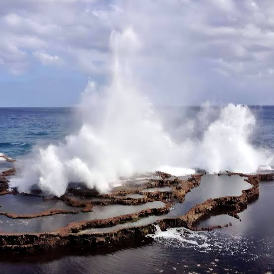

Blowholes

Along the southern coast near Houma, waves push water through holes in the coral rock and it shoots high into the air. The line of blowholes stretches for kilometers, and big swells make the spray even taller. Stay back from the edge because the rocks are sharp and slippery.